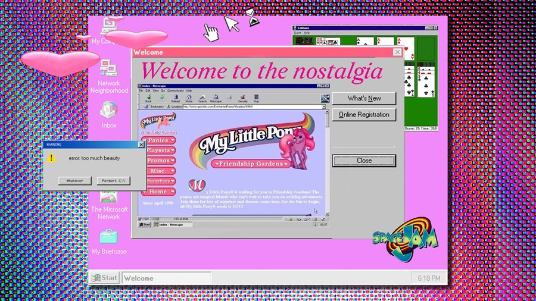
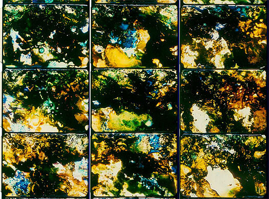

The poor image is a copy in motion. Its quality is bad, its resolution substandard. As it accelerates, it deteriorates. It is a ghost of an image, a preview, a thumbnail, an errant idea, an itinerant image distributed for free, squeezed through slow digital connections, compressed, reproduced, ripped, remixed, as well as copied and pasted into other channels of distribution.
The poor image is a rag or a rip; an AVI or a JPEG, a lumpen proletarian in the class society of appearances, ranked and valued according to its resolution. The poor image has been uploaded, downloaded, shared, reformatted, and reedited. It transforms quality into accessibility, exhibition value into cult value, films into clips, contemplation into distraction. The image is liberated from the vaults of cinemas and archives and thrust into digital uncertainty, at the expense of its own substance. The poor image tends towards abstraction: it is a visual idea in its very becoming.
The poor image is an illicit fifth-generation bastard of an original image. Its genealogy is dubious. Its filenames are deliberately misspelled. It often defies patrimony, national culture, or indeed copyright. It is passed on as a lure, a decoy, an index, or as a reminder of its former visual self. It mocks the promises of digital technology. Not only is it often degraded to the point of being just a hurried blur, one even doubts whether it could be called an image at all. Only digital technology could produce such a dilapidated image in the first place.
Poor images are the contemporary Wretched of the Screen, the debris of audiovisual production, the trash that washes up on the digital economies’ shores. They testify to the violent dislocation, transferrals, and displacement of images—their acceleration and circulation within the vicious cycles of audiovisual capitalism. Poor images are dragged around the globe as commodities or their effigies, as gifts or as bounty. They spread pleasure or death threats, conspiracy theories or bootlegs, resistance or stultification. Poor images show the rare, the obvious, and the unbelievable—that is, if we can still manage to decipher it.

1. Low Resolutions

In one of Woody Allen’s films the main character is out of focus. It’s not a technical problem but some sort of disease that has befallen him: his image is consistently blurred. Since Allen’s character is an actor, this becomes a major problem: he is unable to find work. His lack of definition turns into a material problem. Focus is identified as a class position, a position of ease and privilege, while being out of focus lowers one’s value as an image.
The contemporary hierarchy of images, however, is not only based on sharpness, but also and primarily on resolution. Just look at any electronics store and this system, described by Harun Farocki in a notable 2007 interview, becomes immediately apparent.In the class society of images, cinema takes on the role of a flagship store. In flagship stores high-end products are marketed in an upscale environment. More affordable derivatives of the same images circulate as DVDs, on broadcast television or online, as poor images.
Obviously, a high-resolution image looks more brilliant and impressive, more mimetic and magic, more scary and seductive than a poor one. It is more rich, so to speak. Now, even consumer formats are increasingly adapting to the tastes of cineastes and esthetes, who insisted on 35 mm film as a guarantee of pristine visuality. The insistence upon analog film as the sole medium of visual importance resounded throughout discourses on cinema, almost regardless of their ideological inflection. It never mattered that these high-end economies of film production were (and still are) firmly anchored in systems of national culture, capitalist studio production, the cult of mostly male genius, and the original version, and thus are often conservative in their very structure. Resolution was fetishized as if its lack amounted to castration of the author. The cult of film gauge dominated even independent film production. The rich image established its own set of hierarchies, with new technologies offering more and more possibilities to creatively degrade it.
2. Resurrection (as Poor Images)
But insisting on rich images also had more serious consequences. A speaker at a recent conference on the film essay refused to show clips from a piece by Humphrey Jennings because no proper film projection was available. Although there was at the speaker’s disposal a perfectly standard DVD player and video projector, the audience was left to imagine what those images might have looked like.
In this case the invisibility of the image was more or less voluntary and based on aesthetic premises. But it has a much more general equivalent based on the consequences of neoliberal policies. Twenty or even thirty years ago, the neoliberal restructuring of media production began slowly obscuring non-commercial imagery, to the point where experimental and essayistic cinema became almost invisible. As it became prohibitively expensive to keep these works circulatingvscode-in cinemas, so were they also deemed too marginal to be broadcast on television. Thus they slowly disappeared not just from cinemas, but from the public sphere as well. Video essays and experimental films remained for the most part unseen save for some rare screenings in metropolitan film museums or film clubs, projected in their original resolution before disappearing again into the darkness of the archive.
This development was of course connected to the neoliberal radicalization of the concept of culture as commodity, to the commercialization of cinema, its dispersion into multiplexes, and the marginalization of independent filmmaking. It was also connected to the restructuring of global media industries and the establishment of monopolies over the audiovisual in certain countries or territories. In this way, resistant or non-conformist visual matter disappeared from the surface into an underground of alternative archives and collections, kept alive only by a network of committed organizations and individuals, who would circulate bootlegged VHS copies amongst themselves. Sources for these were extremely rare—tapes moved from hand to hand, depending on word of mouth, within circles of friends and colleagues. With the possibility to stream video online, this condition started to dramatically change. An increasing number of rare materials reappeared on publicly accessible platforms, some of them carefully curated (Ubuweb) and some just a pile of stuff (YouTube).
At present, there are at least twenty torrents of Chris Marker’s film essays available online. If you want a retrospective, you can have it. But the economy of poor images is about more than just downloads: you can keep the files, watch them again, even reedit or improve them if you think it necessary. And the results circulate. Blurred AVI files of half-forgotten masterpieces are exchanged on semi-secret P2P platforms. Clandestine cell-phone videos smuggled out of museums are broadcast on YouTube. DVDs of artists’ viewing copies are bartered. Many works of avant-garde, essayistic, and non-commercial cinema have been resurrected as poor images. Whether they like it or not.
3. Privatization and Piracy
That rare prints of militant, experimental, and classical works of cinema as well as video art reappear as poor images is significant on another level. Their situation reveals much more than the content or appearance of the images themselves: it also reveals the conditions of their marginalization, the constellation of social forces leading to their online circulation as poor images. Poor images are poor because they are not assigned any value within the class society of images—their status as illicit or degraded grants them exemption from its criteria. Their lack of resolution attests to their appropriation and displacement.
Obviously, this condition is not only connected to the neoliberal restructuring of media production and digital technology; it also has to do with the post-socialist and postcolonial restructuring of nation states, their cultures, and their archives. While some nation states are dismantled or fall apart, new cultures and traditions are invented and new histories created. This obviously also affects film archives—in many cases, a whole heritage of film prints is left without its supporting framework of national culture. As I once observed in the case of a film museum in Sarajevo, the national archive can find its next life in the form of a video-rental store. Pirate copies seep out of such archives through disorganized privatization. On the other hand, even the British Library sells off its contents online at astronomical prices.
As Kodwo Eshun has noted, poor images circulate partly in the void left by state-cinema organizations who find it too difficult to operate as a 16/35-mm archive or to maintain any kind of distribution infrastructure in the contemporary era. From this perspective, the poor image reveals the decline and degradation of the film essay, or indeed any experimental and non-commercial cinema, which in many places was made possible because the production of culture was considered a task of the state. Privatization of media production gradually grew more important than state controlled/sponsored media production. But, on the other hand, the rampant privatization of intellectual content, along with online marketing and commodification, also enable piracy and appropriation; it gives rise to the circulation of poor images.
4. Imperfect Cinema
The emergence of poor images reminds one of a classic Third Cinema manifesto, For an Imperfect Cinema, by Juan García Espinosa, written in Cuba in the late 1960s. Espinosa argues for an imperfect cinema because, in his words, “perfect cinema—technically and artistically masterful—is almost always reactionary cinema.” The imperfect cinema is one that strives to overcome the divisions of labor within class society. It merges art with life and science, blurring the distinction between consumer and producer, audience and author. It insists upon its own imperfection, is popular but not consumerist, committed without becoming bureaucratic.
In his manifesto, Espinosa also reflects on the promises of new media. He clearly predicts that the development of video technology will jeopardize the elitist position of traditional filmmakers and enable some sort of mass film production: an art of the people. Like the economy of poor images, imperfect cinema diminishes the distinctions between author and audience and merges life and art. Most of all, its visuality is resolutely compromised: blurred, amateurish, and full of artifacts.
In some way, the economy of poor images corresponds to the description of imperfect cinema, while the description of perfect cinema represents rather the concept of cinema as a flagship store. But the real and contemporary imperfect cinema is also much more ambivalent and affective than Espinosa had anticipated. On the one hand, the economy of poor images, with its immediate possibility of worldwide distribution and its ethics of remix and appropriation, enables the participation of a much larger group of producers than ever before. But this does not mean that these opportunities are only used for progressive ends. Hate speech, spam, and other rubbish make their way through digital connections as well. Digital communication has also become one of the most contested markets—a zone that has long been subjected to an ongoing original accumulation and to massive (and, to a certain extent, successful) attempts at privatization.
The networks in which poor images circulate thus constitute both a platform for a fragile new common interest and a battleground for commercial and national agendas. They contain experimental and artistic material, but also incredible amounts of porn and paranoia. While the territory of poor images allows access to excluded imagery, it is also permeated by the most advanced commodification techniques. While it enables the users’ active participation in the creation and distribution of content, it also drafts them into production. Users become the editors, critics, translators, and (co-)authors of poor images.
Poor images are thus popular images—images that can be made and seen by the many. They express all the contradictions of the contemporary crowd: its opportunism, narcissism, desire for autonomy and creation, its inability to focus or make up its mind, its constant readiness for transgression and simultaneous submission. Altogether, poor images present a snapshot of the affective condition of the crowd, its neurosis, paranoia, and fear, as well as its craving for intensity, fun, and distraction. The condition of the images speaks not only of countless transfers and reformattings, but also of the countless people who cared enough about them to convert them over and over again, to add subtitles, reedit, or upload them.
In this light, perhaps one has to redefine the value of the image, or, more precisely, to create a new perspective for it. Apart from resolution and exchange value, one might imagine another form of value defined by velocity, intensity, and spread. Poor images are poor because they are heavily compressed and travel quickly. They lose matter and gain speed. But they also express a condition of dematerialization, shared not only with the legacy of conceptual art but above all with contemporary modes of semiotic production. Capital’s semiotic turn, as described by Felix Guattari, plays in favor of the creation and dissemination of compressed and flexible data packages that can be integrated into ever-newer combinations and sequences.